Semantic correspondence is essential for handling diverse in-the-wild images lacking explicit correspondence annotations. While recent 2D foundation models offer powerful features, adapting them for unsupervised learning via nearest-neighbor pseudo-labels has key limitations: it operates locally, ignoring structural relationships, and consequently its reliance on 2D appearance fails to resolve geometric ambiguities arising from symmetries or repetitive features.
In this work, we address this by reformulating pseudo-label generation as a Fused Gromov-Wasserstein (FGW) problem, which jointly optimizes inter-feature similarity and intra-structural consistency. Our framework, Shape-of-You (SoY), leverages a 3D foundation model to define this intra-structure in the geometric space, resolving the abovementioned ambiguity. However, since FGW is a computationally prohibitive quadratic problem, we approximate it through anchor-based linearization. The resulting probabilistic transport plan provides a structurally consistent but noisy supervisory signal. Thus, we introduce a soft-target loss dynamically blending guidance from this plan with network predictions to build a learning framework robust to this noise.
SoY achieves state-of-the-art performance on SPair-71k and AP-10k datasets, establishing a new benchmark in semantic correspondence without explicit geometric annotations.
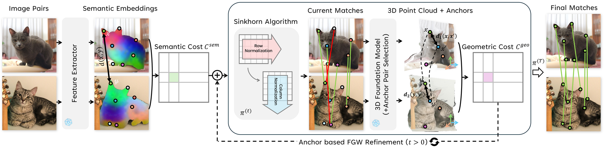
Overview of our pseudo-label generation pipeline. High-confidence anchors from an initial semantic match enable a tractable linear approximation of the otherwise quadratic Gromov-Wasserstein geometric cost. Fusing this geometric cost with the semantic cost yields a final cost matrix, solved via unbalanced optimal transport to produce a transport plan that serves as a structurally consistent pseudo-label.
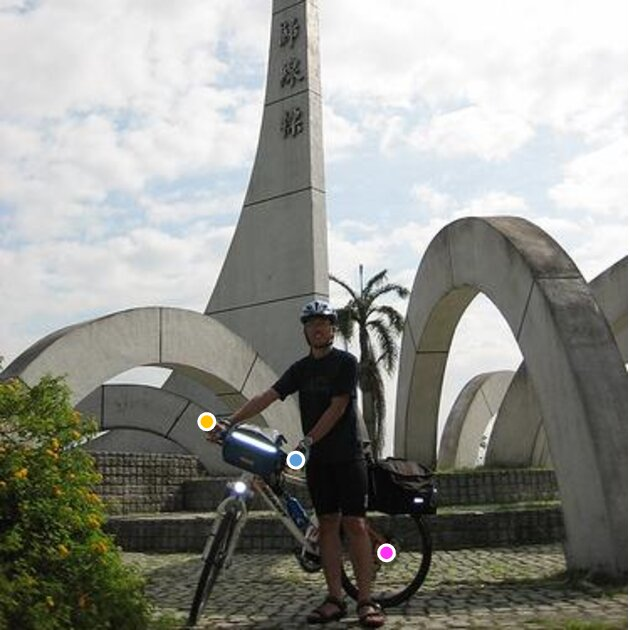
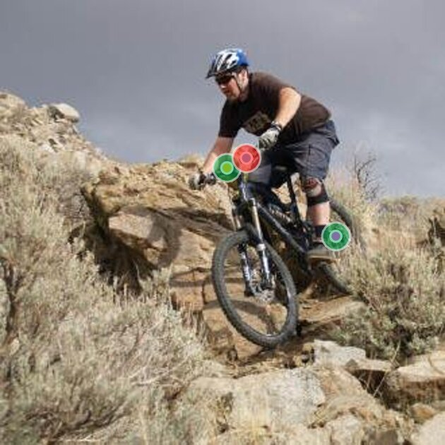
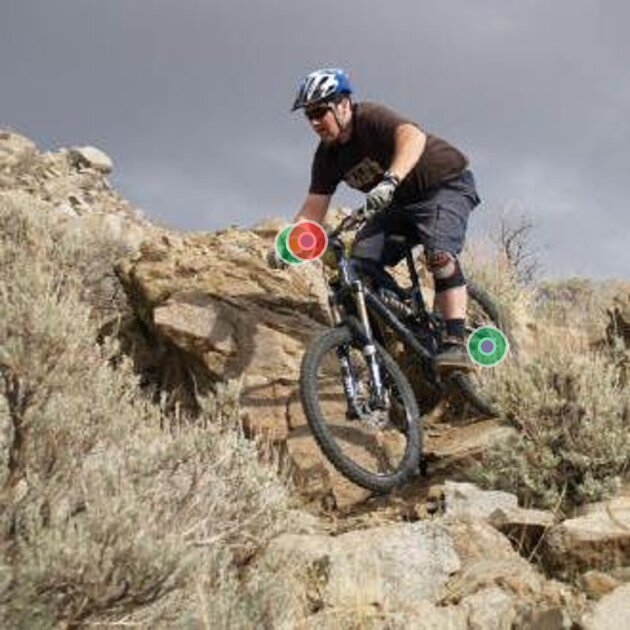
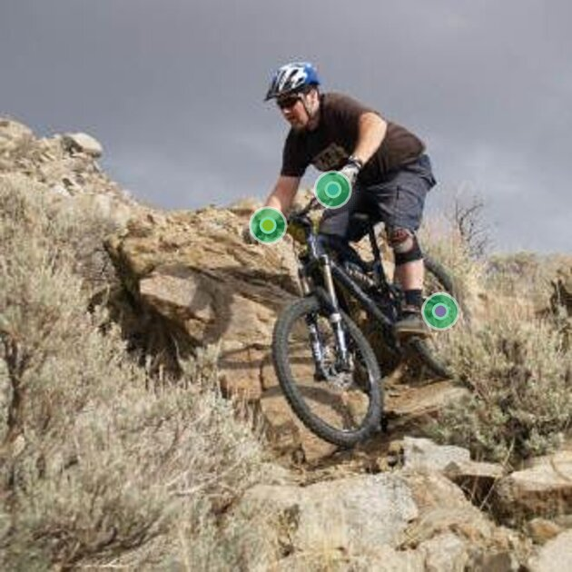
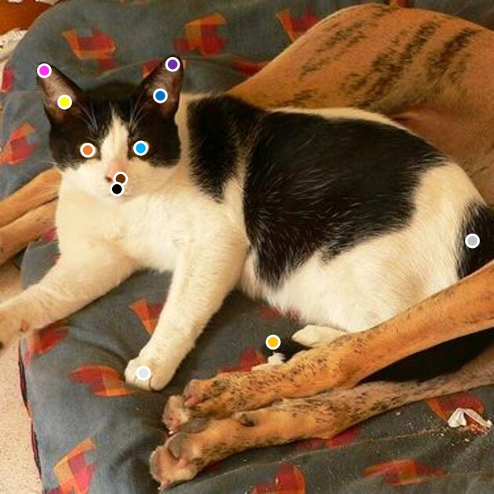
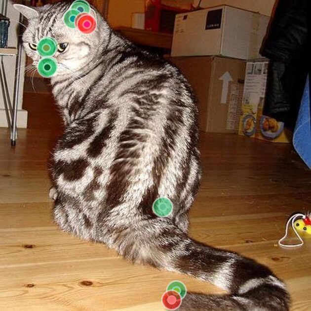
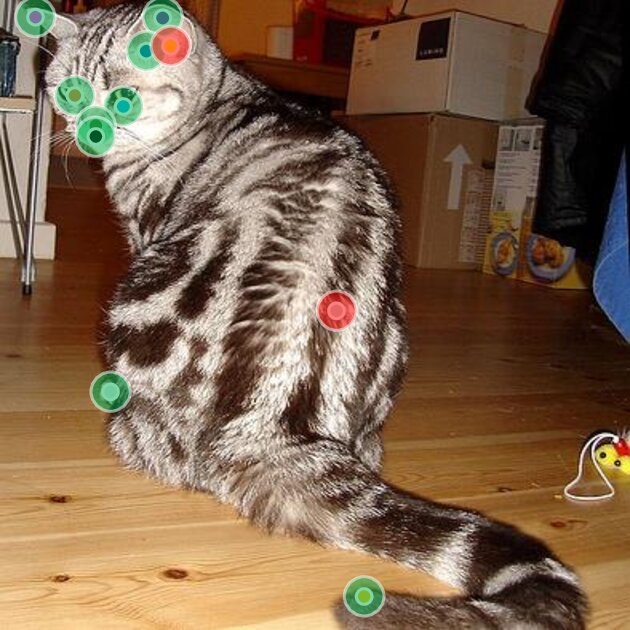
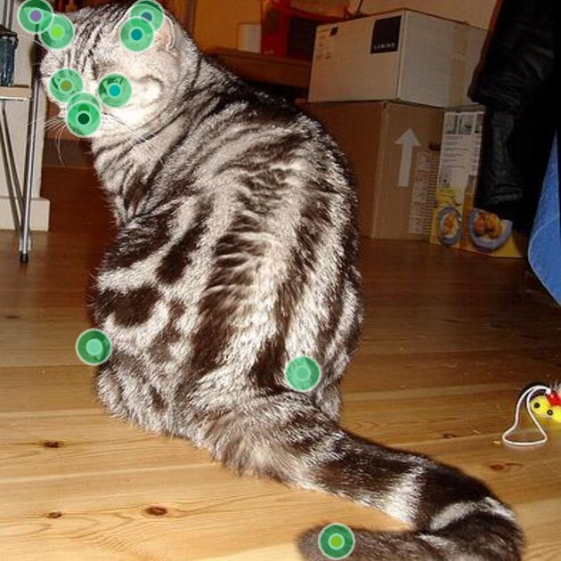
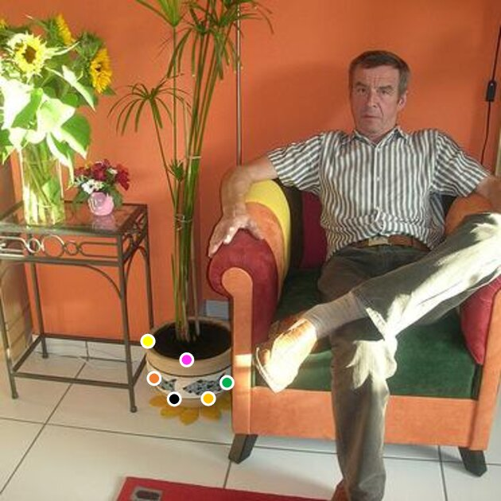
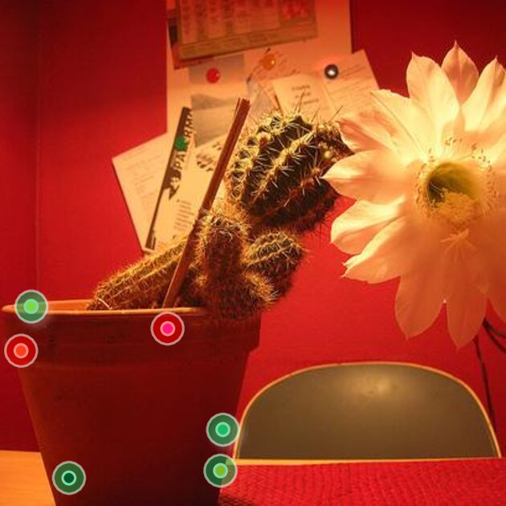
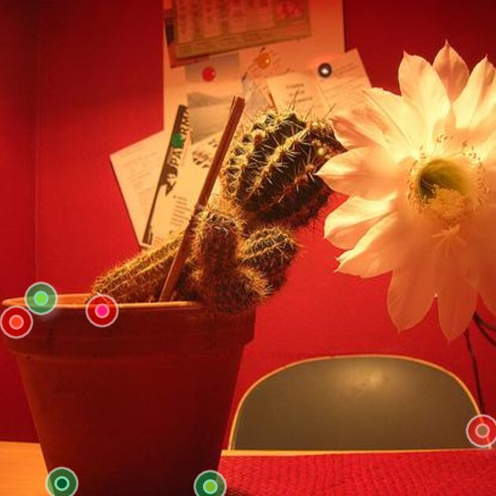
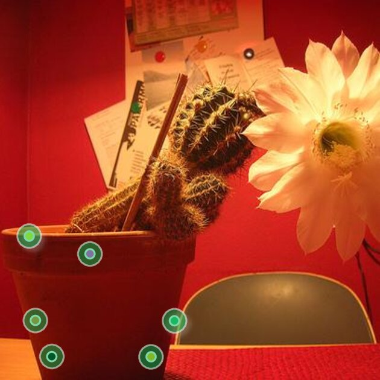
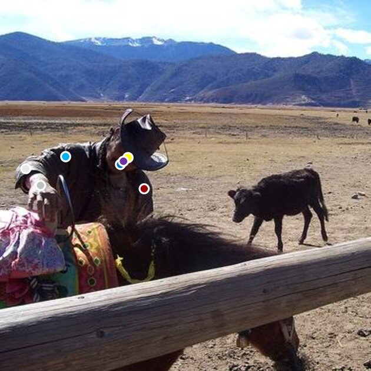
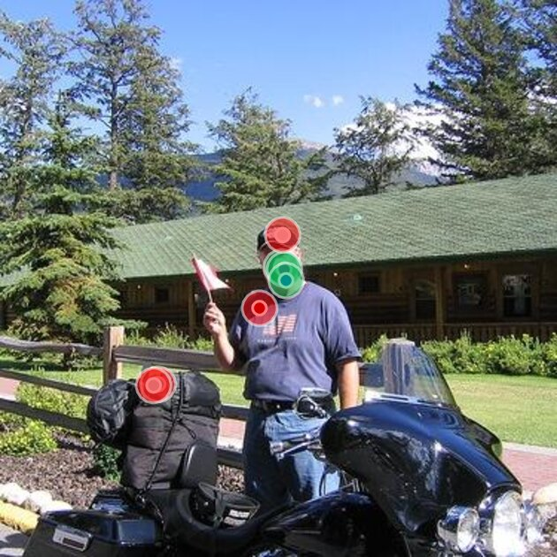
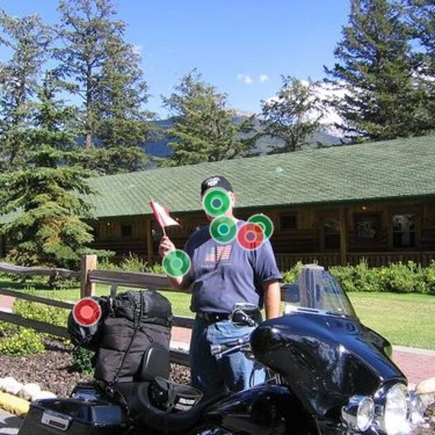
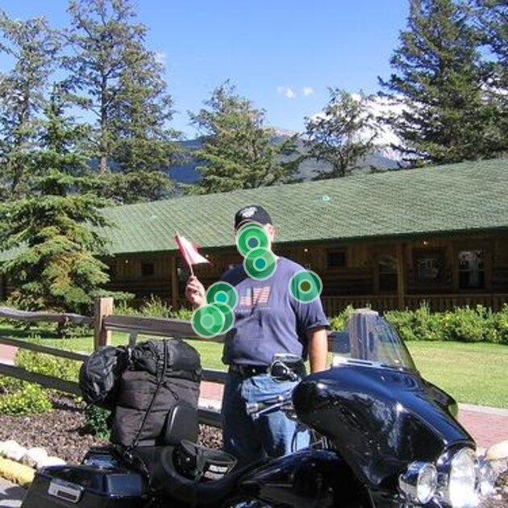
Comparison on challenging cases (viewpoint change, occlusion, pose variation). Shape-of-You produces accurate matches where 2D-only baselines confuse symmetric or repetitive parts.
@inproceedings{im2026shapeofyou,
title={Shape-of-You: Fused Gromov-Wasserstein Optimal Transport for Semantic Correspondence in-the-Wild},
author={Im, Jiin and Liu, Sisung and Hong, Je Hyeong},
booktitle={Proceedings of the IEEE/CVF Conference on Computer Vision and Pattern Recognition (CVPR)},
year={2026}
}